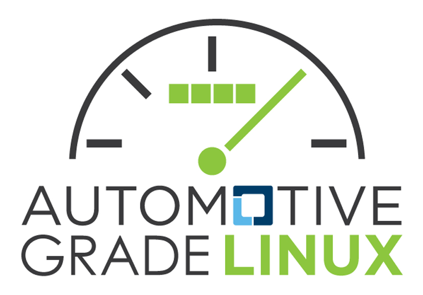

Welcome to the Automotive Grade Linux (AGL) documentation.

This current page provides you with a brief overview of the AGL Distribution and with an introduction to selected topics that can help you get a quick start using AGL for development.
What is Automotive Grade Linux?
Automotive Grade Linux is a collaborative, open source project that brings together automakers, suppliers, and technology companies for the purpose of building Linux-based, open source software platforms for automotive applications that can serve as de facto industry standards.
AGL address all software in the vehicle: infotainment, instrument cluster, heads-up-display (HUD), telematics, connected car, advanced driver assistance systems (ADAS), functional safety, and autonomous driving.
Adopting a shared platform across the industry reduces fragmentation and allows automakers and suppliers to reuse the same code base, which leads to rapid innovation and faster time-to-market for new products.
AGL is a Linux Foundation project and its goals are as follows:
- Build a single platform for the entire industry
- Develop 70 to 80% of the starting point for a production project
- Reduce fragmentation by combining the best of open source
- Develop an ecosystem of developers, suppliers, and expertise that all use a single platform
You can find additional overview information on the "About Automotive Grade Linux" page. You can find information on the AGL Unified Code Base on the "Unified Code Base" page.
What Can I Do Right Away Using AGL?
The "Getting Started" topics allow you to quickly accomplish some work using AGL. You can use the "Getting Started" sections to do the following:
-
Quickstart to quickly install the pre-built images into an emulation or hardware platform.
-
Learn How to Build an AGL Image by working through fundamental steps that show you how to build for various supported hardware targets (e.g. Raspberry PI boards).
-
Learn How to Create an Application using the application development workflow.
The AGL community is diverse and supportive. You can become an active community member that contributes feedback, ideas, suggestions, bugs and documentation.
-
Join the IRC conversation using the
#automotivechannel onirc.freenode.net. -
Subscribe to the AGL discussions mailing list at automotive-discussions.
-
Learn about AGL distribution by visiting the "AGL Distribution" wiki page.
-
Explore further "Getting Started" information by visiting the "Getting Started with AGL" wiki page.
-
Learn how to contribute by visiting the "Contributing to the AGL Distro" wiki page.